Coordinates, file formats and interval arithmetic on the command line and in R
In RNA-seq you counted reads per gene: the annotation told you where to count. In epigenomics there is no such list. Peaks, domains, CpG islands, loops and methylated regions are all intervals that you find in the data, and most of the analysis is arithmetic on intervals: which overlap, how far apart, how many more than by chance.
bedtools on the command line.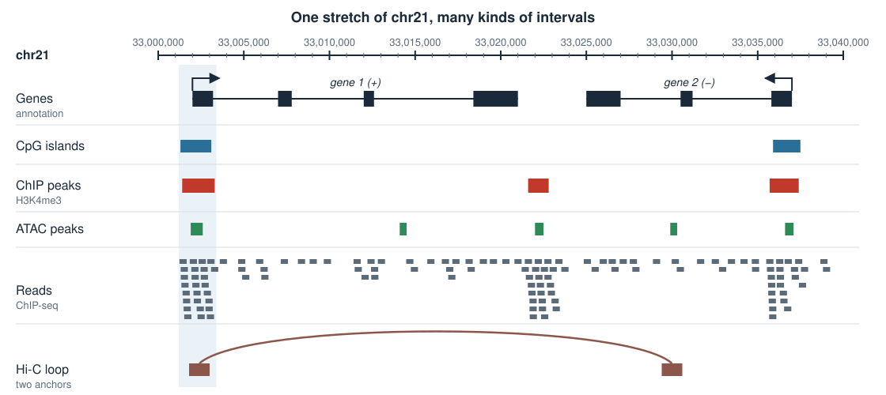
chr21:33,000,000–33,002,000 (+).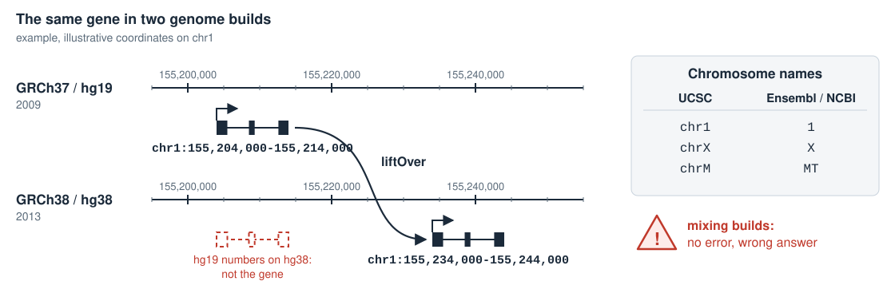
chr1, Ensembl/NCBI write 1. Mitochondria: chrM vs MT.chr names throughout.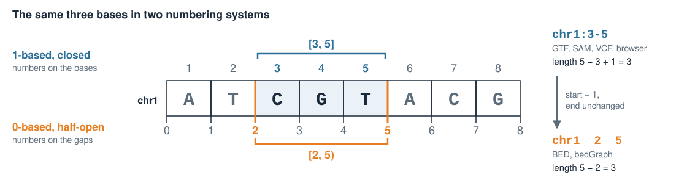
CGT above are chr1:3-5 in 1-based, chr1 2 5 in BED. Length: e - s + 1 in 1-based, e - s in BED.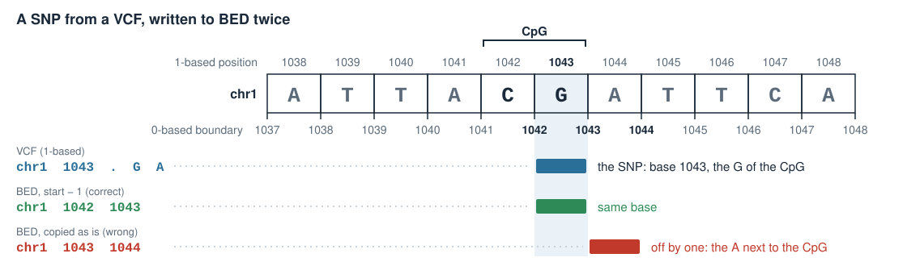
rtracklayer::import adds 1 to BED starts). Trouble starts when you write files by hand with awk or paste.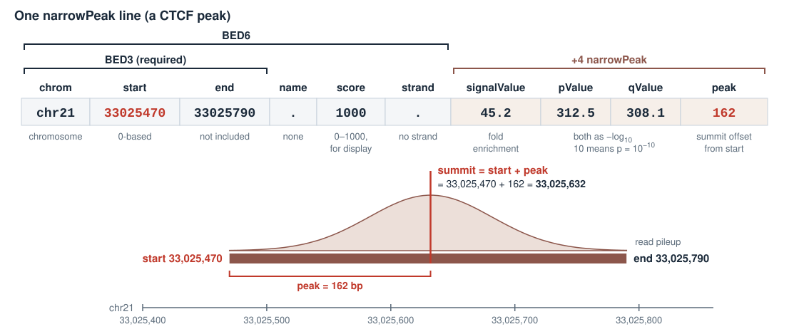
chrom start end (0-based), then optional name score strand and more.signalValue (enrichment), pValue and qValue (as -\log_{10}), and peak: the summit, as an offset from start.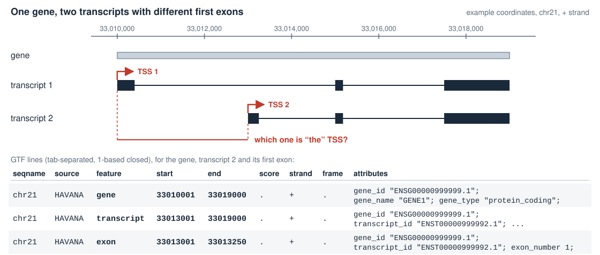
gene, transcript, exon, CDS, …), 1-based closed.gene_id, gene_name, gene_type, transcript_id, ….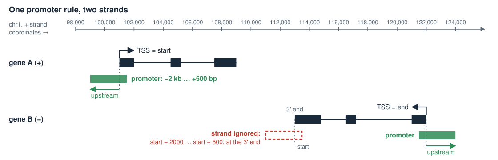
start for a + gene, end for a − gene. Upstream of a − gene means higher coordinates.GenomicRanges::promoters() handles it; bedtools slop -s -l 2000 -r 500 too.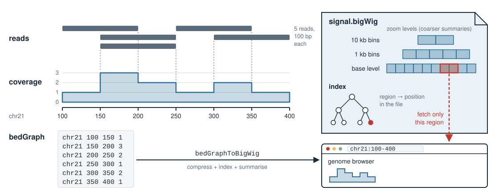
chrom start end value, one line per run of constant value.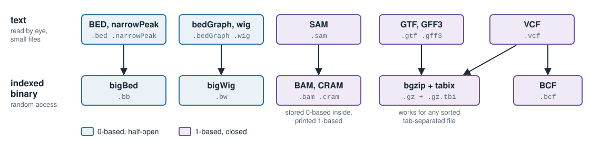
| content | text format | indexed binary | coordinates |
|---|---|---|---|
| intervals (peaks, regions) | BED, narrowPeak | bigBed | 0-based |
| signal per position | bedGraph, wig | bigWig | 0-based |
| aligned reads | SAM | BAM, CRAM | 1-based in SAM text |
| annotation | GTF, GFF3 | (tabix-indexed .gz) | 1-based |
| variants | VCF | BCF | 1-based in VCF text |
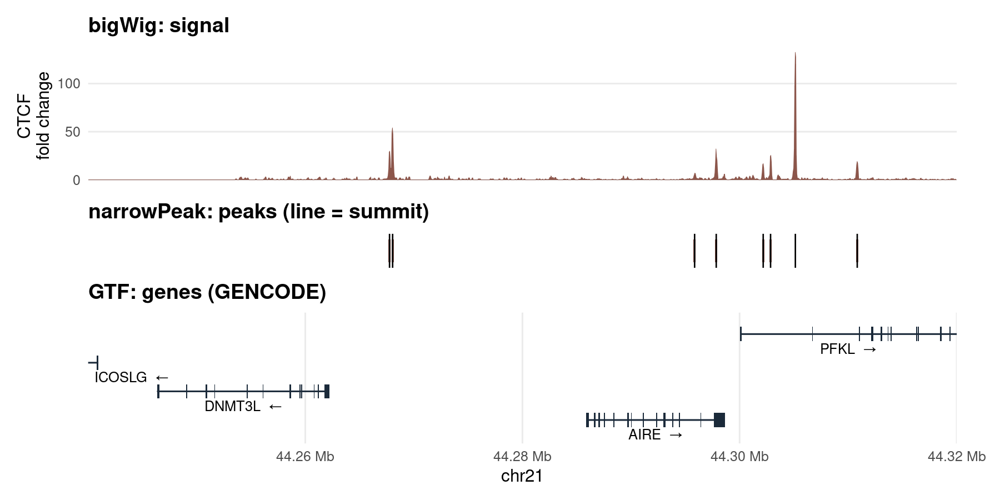
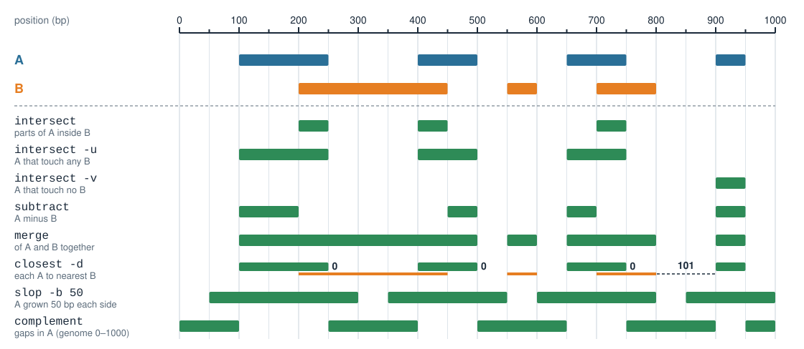
-u).-v: A minus B, or the A intervals that overlap no B.-d) intervals into one.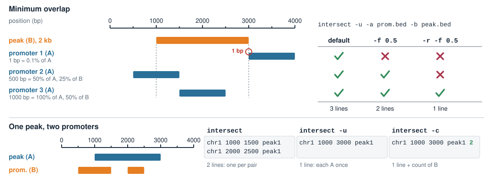
bedtools intersect -f 0.5 (at least 50% of A), -r (reciprocal), or a minimum number of bases (minoverlap in R).-u), or count of B per A (-c). These give different numbers of “overlapping peaks”.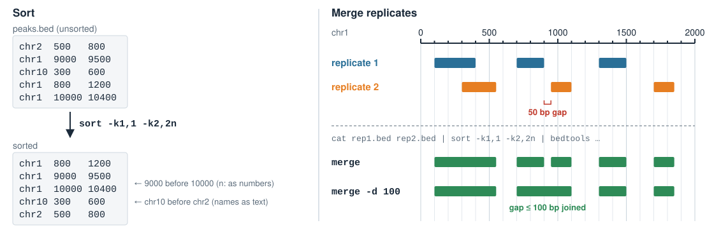
sort -k1,1 -k2,2n.bedtools merge collapses overlapping intervals: e.g. peaks from two replicates into one consensus set.-c 5 -o max, keep the maximum score).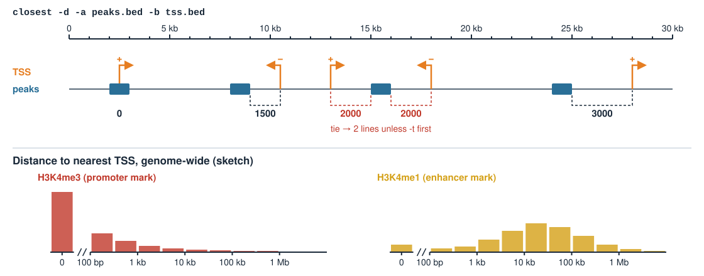
bedtools closest -a peaks.bed -b tss.bed -d reports, for each peak, the nearest TSS and the distance (0 if they overlap).-t first keeps one.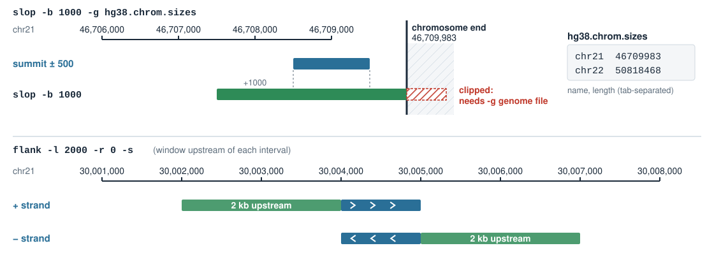
slop extends each interval (e.g. ±1 kb around a summit), flank makes windows next to it (e.g. the 2 kb upstream), both strand-aware with -s.-g hg38.chrom.sizes) and clip at the end.# promoter windows: 1 kb either side of each protein-coding TSS
bedtools slop -i tss.bed -g hg38.chrom.sizes -b 1000 > promoters.bed
# H3K4me3 peaks at a promoter (each peak once) vs. not
bedtools intersect -u -a h3k4me3.bed -b promoters.bed | wc -l
bedtools intersect -v -a h3k4me3.bed -b promoters.bed | wc -l
# candidate enhancers: H3K27ac peaks with no H3K4me3 peak and away from TSSs
bedtools intersect -v -a h3k27ac.bed -b h3k4me3.bed \
| bedtools intersect -v -a - -b promoters.bed > enhancers.bed
# distance from every enhancer to its nearest TSS
sort -k1,1 -k2,2n enhancers.bed | bedtools closest -a - -b tss.bed -d -t first- means standard input).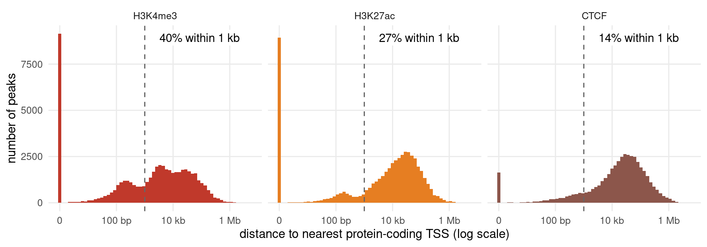
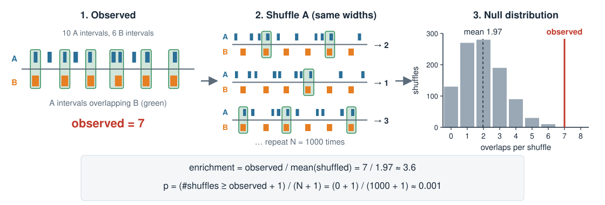
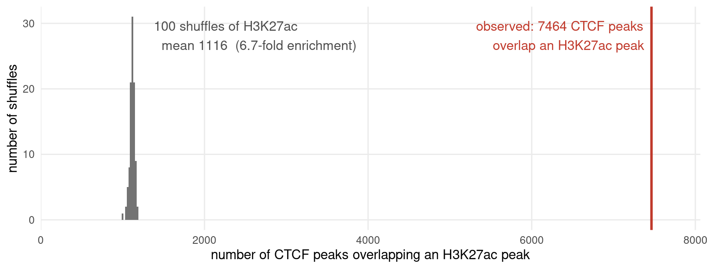
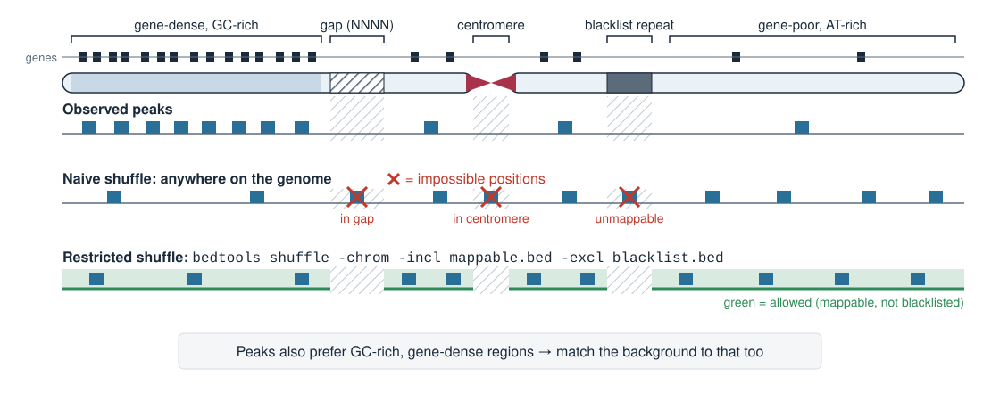
-chrom) and inside the mappable, non-blacklisted genome (-incl / -excl).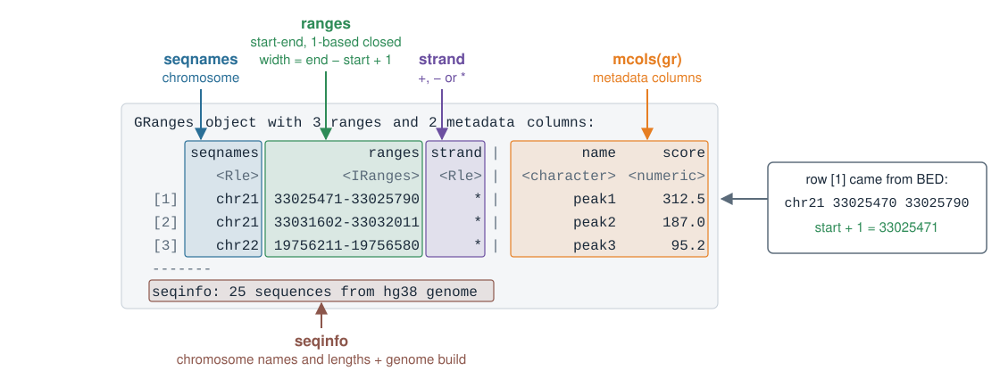
GRanges (package GenomicRanges): seqnames, ranges (start, end, width, 1-based closed), strand, and any metadata columns (mcols).seqinfo holds chromosome names, lengths and genome build: R refuses to compare ranges from different builds if they are set.rtracklayer::import() reads BED, narrowPeak, GTF and bigWig, and converts BED’s 0-based starts to 1-based.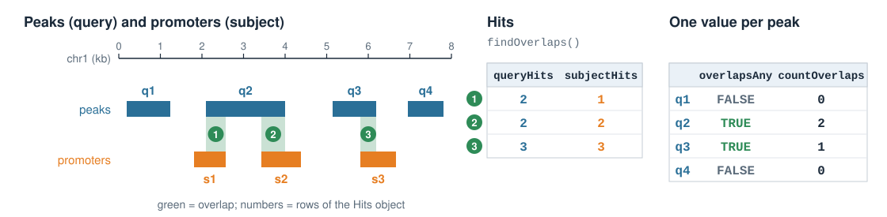
hits <- findOverlaps(peaks, promoters) # one row per overlapping pair
queryHits(hits); subjectHits(hits) # indices into peaks and promoters
peaks[unique(queryHits(hits))] # each peak once
overlapsAny(peaks, promoters) # TRUE/FALSE per peak (= bedtools -u)
countOverlaps(peaks, promoters) # number of promoters per peak (= -c)| task | bedtools | GenomicRanges |
|---|---|---|
| A that overlap B | intersect -u |
subsetByOverlaps(A, B) |
| A that do not overlap B | intersect -v |
A[!overlapsAny(A, B)] |
| all overlapping pairs | intersect -wa -wb |
findOverlaps(A, B) |
| merge overlapping | merge |
reduce(A) |
| nearest and distance | closest -d |
distanceToNearest(A, B) |
| windows around TSS | slop -s -l -r / flank |
promoters(A, upstream, downstream), flank(), resize() |
| gaps | complement |
gaps(A) |
| count per interval | intersect -c, coverage |
countOverlaps(A, B) |
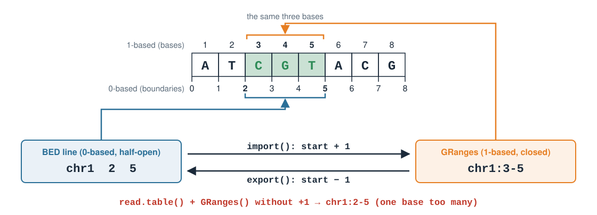
chr1 2 5 and the GRanges chr1:3-5 are the same three bases.rtracklayer::import() and export() convert in both directions. If you read a BED file with read.table() and build a GRanges yourself, add 1 to the start.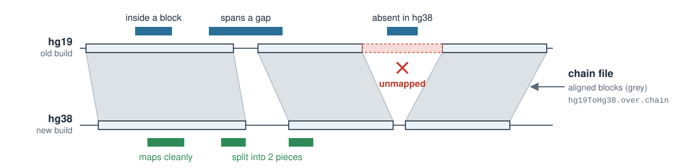
rtracklayer::liftOver in R).| idea | key fact |
|---|---|
| intervals | chrom, start, end, strand; same build and same chromosome names in every file |
| 0-based half-open | BED, bedGraph: length = end − start; first base is 0 |
| 1-based closed | GTF, SAM, VCF, GRanges, browser display: first base is 1 |
| narrowPeak | BED6 + signalValue, −log10 p, −log10 q, summit offset from start |
| bigWig | indexed binary signal track; read only the region you need |
| strand | TSS and upstream depend on strand; peaks have none |
| bedtools | intersect (-u, -v, -c, -f), merge, closest, slop/flank (-g), shuffle |
| GenomicRanges | findOverlaps, subsetByOverlaps, reduce, distanceToNearest, promoters |
| overlap statistics | compare with shuffled intervals; the null decides the answer |
Not required reading and not examined. For those who want the primary literature.